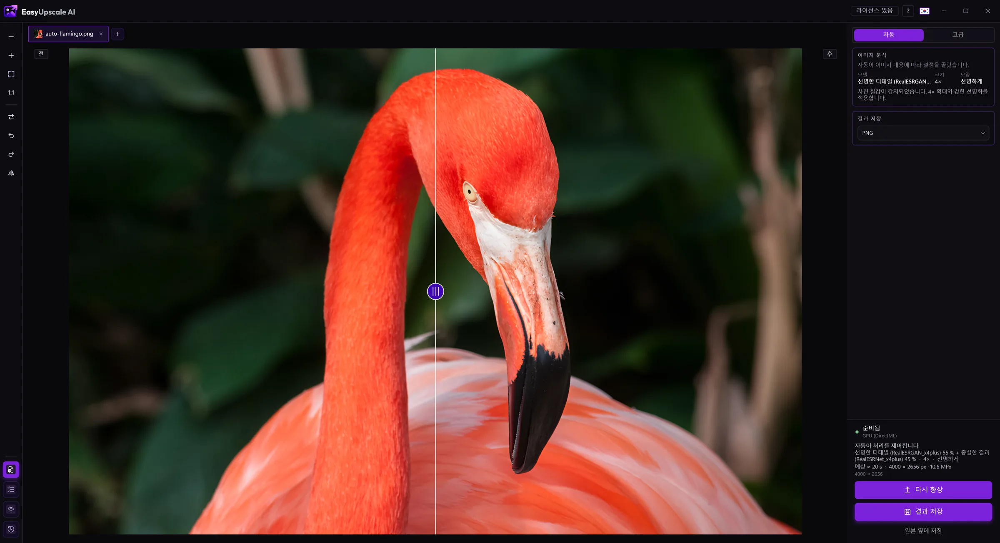

더 선명한 이미지가 필요하세요?
흐리거나 부드러운 사진은 대부분 개선할 수 있습니다. EasyUpscale AI는 내 PC에서 실행되는 AI로 사진을 확대하고 선명하게 만듭니다. 아무것도 업로드되지 않습니다.

Windows용 무료 다운로드 · 라이선스 구매 · €14.99
방법
- EasyUpscale AI에서 이미지를 엽니다.
- 이미지 개선을 클릭합니다. Auto 모드가 사진, 그림, 글자, 손상된 이미지 중 무엇인지 인식해 알맞은 모델을 고릅니다.
- 전후 슬라이더로 결과를 확인하고 PNG 또는 JPEG로 저장합니다.
기대할 수 있는 것
- 2× 확대는 무료이며 워터마크가 없습니다. 한 번 결제하는 라이선스(€14.99, 구독 없음)로 4×, 고급 모드, 일괄 처리, 추가 형식을 사용할 수 있습니다.
- AI는 그럴듯한 세부를 더할 수 있지만 사진에 없는 것을 되살릴 수는 없습니다. 심하게 흐리거나 흔들린 사진도 나아지지만 기적을 기대하지는 마세요.
- 처리 후에는 선명도와 노이즈 완화를 미세 조정해 결과가 과하게 보정된 느낌이 들지 않게 할 수 있습니다.
오프라인인 이유
- 사진이 컴퓨터 밖으로 나가지 않습니다.
- 이미지당 크레딧도, 대기열도 없습니다.
- NVIDIA, AMD, Intel 그래픽 카드에서 동작합니다(DirectX 12).